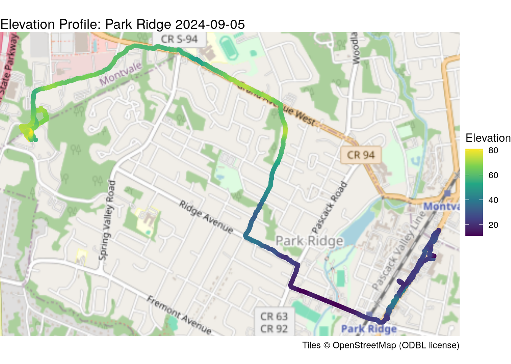
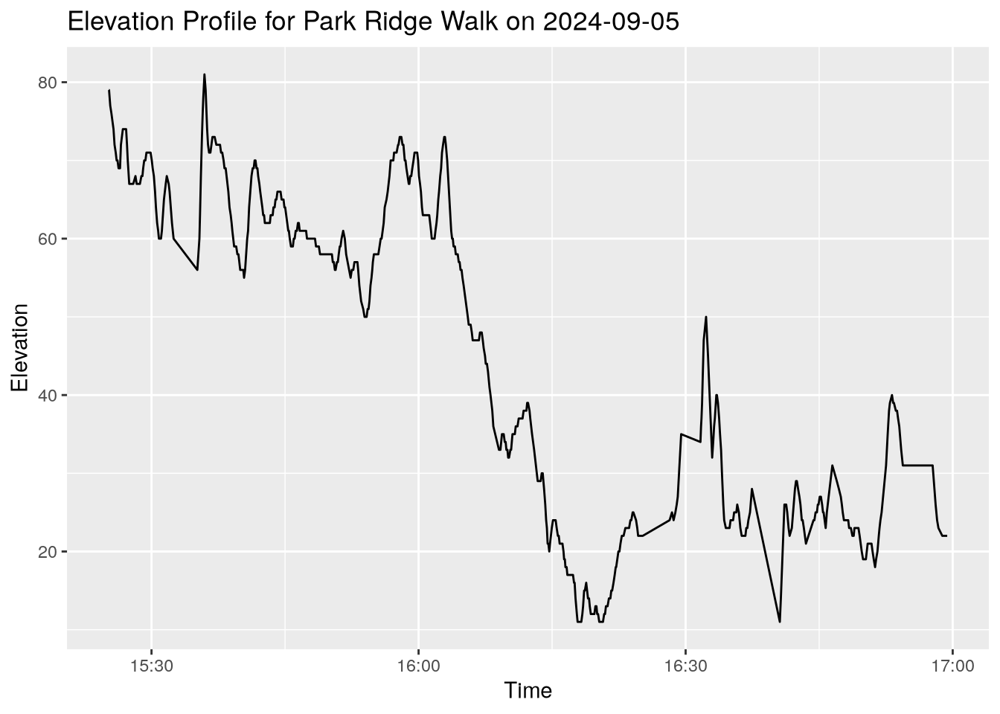
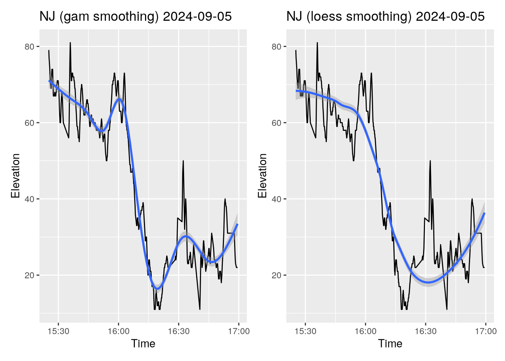

library(gpx)
library(sf)
library(dplyr)
library(ggplot2)
library(ggspatial)
library(patchwork)I recently published a series of articles on analyzing GPS data from personal sport tracking software using Python. I’ve started using R again lately and, while I like Python, I really like R. R is not a general-purpose language like Python, and is therefore far less commonly studied. It was mission-built for this type of work, and, as is often the case with custom-built tools, it is powerful, comfortable, and, frankly, fun to work with. I thought it might be interesting to compare the process in Python described in the previous articles with the process in R.
Libraries
Python data frames are built on the pandas and numpy libraries, with matplotlib as the primary plotting tool. Data frames and vector processing are native to R. The dplyr library provides convenience functions for manipulating data. The amazing gplot2 provides the functionality of matplotlib and seaborn and more, with simple syntax. The sf package, which stands for Simple Features, provides the geometry and geospatial functionality which geopandas and shapely do in Python. I’ll use ggspatial here for basemap tiles where I used contextily in Python, and I’ll add patchwork for convenient side-by-side display.
Syntax
A few notes about syntax to start off: R uses the <- arrow for assignment, but accepts = as well. Data frame slicing uses the same [row,column] approach with explicit or boolean values. Unlike pandas, which distinguishes between df.loc and df.iloc, in R you can slice using numeric indices or strings without distinction. On a similar topic, R uses one-indexing, but is inclusive of the end, so df[1:2] in R is equivalent to Python’s df.iloc[:2], or more explicitly df.iloc[0:2], and the second element is directly accessed with df[2] instead of df.iloc[1].
There’s an important twist to this which will catch you multiple times. Even though the syntax is [row,column], if you supply only one numeric index, without a comma, it will be interpreted as a column index. So df[1] gets the first column, while df[1, ] gets the first row.
The main syntactical difference is R’s extensive use of piping, using the pipe operator |>, sometimes written as %>%. This looks similar to accessing a series of an object’s methods through a chain of .s in Python, but it isn’t. The pipe in R works like the pipe in a Linux shell, simply passing the output of one function to the next function as its first argument. This is one of my personal favorite aspects of working in R, since it allows for natural expression of a series of steps which constitue a workflow. ggplot2 takes a similar syntactical approach, layering elements of the plot by chaining using the + operator.
Loading the data
Let’s get started. With Python, we needed to parse the raw gpx data, which is in an XML format, to a CSV formatted file, which could then be imported into a pandas data frame, and then turned that into a geopandas data frame. I used beautifulsoup to do so. R, fortunately, has a gpx library that allows us to go straight from gpx into a data frame. Let’s see what that looks like. The str() command will let us know what’s inside.
trek_data <- read_gpx("data/b3/Workout-2024-09-06-16-29-37.gpx")
str(trek_data)List of 3
$ routes :List of 1
..$ :'data.frame': 0 obs. of 4 variables:
.. ..$ Elevation: logi(0)
.. ..$ Time : logi(0)
.. ..$ Latitude : logi(0)
.. ..$ Longitude: logi(0)
$ tracks :List of 1
..$ River Vale:'data.frame': 137 obs. of 6 variables:
.. ..$ Elevation : num [1:137] -4 -4 -4 -4 -4 -4 -4 -4 -4 -4 ...
.. ..$ Time : POSIXct[1:137], format: "2024-09-06 16:29:37" "2024-09-06 16:29:37" ...
.. ..$ Latitude : num [1:137] 41 41 41 41 41 ...
.. ..$ Longitude : num [1:137] -74 -74 -74 -74 -74 ...
.. ..$ extensions: logi [1:137] NA NA NA NA NA NA ...
.. ..$ Segment ID: int [1:137] 1 1 1 1 1 1 1 1 1 1 ...
$ waypoints:List of 1
..$ :'data.frame': 0 obs. of 4 variables:
.. ..$ Elevation: logi(0)
.. ..$ Time : logi(0)
.. ..$ Latitude : logi(0)
.. ..$ Longitude: logi(0) The result is not a data frame, but a list of lists. The second one, called tracks, is the only one with observations, so we can start with that. Don’t forget that R does not zero-index lists, so we use 2 not 1, and extract it with double square brackets.
trek_tracks <- trek_data[[2]]
str(trek_tracks)List of 1
$ River Vale:'data.frame': 137 obs. of 6 variables:
..$ Elevation : num [1:137] -4 -4 -4 -4 -4 -4 -4 -4 -4 -4 ...
..$ Time : POSIXct[1:137], format: "2024-09-06 16:29:37" "2024-09-06 16:29:37" ...
..$ Latitude : num [1:137] 41 41 41 41 41 ...
..$ Longitude : num [1:137] -74 -74 -74 -74 -74 ...
..$ extensions: logi [1:137] NA NA NA NA NA NA ...
..$ Segment ID: int [1:137] 1 1 1 1 1 1 1 1 1 1 ...This gets us closer, now we have list of one. Let’s pull that out and display the first two rows.
trek <- trek_tracks[[1]]
trek[1:2,] Elevation Time Latitude Longitude extensions Segment ID
1 -4 2024-09-06 16:29:37 41.01128 -74.0101 NA 1
2 -4 2024-09-06 16:29:37 41.01128 -74.0101 NA 1Note the comma, which is very important. If only one value is supplied, it chooses columns instead of rows.
head(trek[1:2], 2) Elevation Time
1 -4 2024-09-06 16:29:37
2 -4 2024-09-06 16:29:37And the final frame looks like:
str(trek)'data.frame': 137 obs. of 6 variables:
$ Elevation : num -4 -4 -4 -4 -4 -4 -4 -4 -4 -4 ...
$ Time : POSIXct, format: "2024-09-06 16:29:37" "2024-09-06 16:29:37" ...
$ Latitude : num 41 41 41 41 41 ...
$ Longitude : num -74 -74 -74 -74 -74 ...
$ extensions: logi NA NA NA NA NA NA ...
$ Segment ID: int 1 1 1 1 1 1 1 1 1 1 ...Importing a collection of treks
Now that I know “where” the information is, I can go ahead and import a series of files and combine them into a single data frame. As I did with Python, I will assign a unique identifier to each trek, and then combine them. The R equivalent of df.append in pandas is the aptly-named bind_rows() from the dplyr library.
files <- list.files(path = "data/b3/",
pattern = "\\.gpx$",
full.names = TRUE)
data_list <- list()
i <- 1
for (file in files) {
data <- read_gpx(file)[[2]][[1]]
data$id = i
i <- i + 1
data_list[[file]] <- data
}
tracks_df <- dplyr::bind_rows(data_list)
str(tracks_df)'data.frame': 3044 obs. of 7 variables:
$ Elevation : num 79 79 77 76 75 74 72 71 70 70 ...
$ Time : POSIXct, format: "2024-09-05 15:25:13" "2024-09-05 15:25:13" ...
$ Latitude : num 41 41 41 41 41 ...
$ Longitude : num -74.1 -74.1 -74.1 -74.1 -74.1 ...
$ extensions: logi NA NA NA NA NA NA ...
$ Segment ID: int 1 1 1 1 1 1 1 1 1 1 ...
$ id : num 1 1 1 1 1 1 1 1 1 1 ...Note the use of $ to access the columns. An alternate syntax, data['id'] is available for column names with spaces. This is like pandas use of the . operator.
Data frame to geo-data
In Python, we turned this into a geo-enabled data frame with:
```{python}
trek_gdf = gpd.GeoDataFrame(
trek_df,
geometry=gpd.points_from_xy(x=trek_df.Lon, y=trek_df.Lat)
).set_crs(4269)
trek_gdf.info()
```R uses the sf::st_as_sf() for this purpose, with much less verbose syntax.
treks <- tracks_df |>
st_as_sf(coords = c("Longitude","Latitude"),
crs = 4326)str(treks)Classes 'sf' and 'data.frame': 3044 obs. of 6 variables:
$ Elevation : num 79 79 77 76 75 74 72 71 70 70 ...
$ Time : POSIXct, format: "2024-09-05 15:25:13" "2024-09-05 15:25:13" ...
$ extensions: logi NA NA NA NA NA NA ...
$ Segment ID: int 1 1 1 1 1 1 1 1 1 1 ...
$ id : num 1 1 1 1 1 1 1 1 1 1 ...
$ geometry :sfc_POINT of length 3044; first list element: 'XY' num -74.1 41
- attr(*, "sf_column")= chr "geometry"
- attr(*, "agr")= Factor w/ 3 levels "constant","aggregate",..: NA NA NA NA NA
..- attr(*, "names")= chr [1:5] "Elevation" "Time" "extensions" "Segment ID" ...As you can see, we now have a geometry column and the Time column was assigned the appropriate type, which we had to do as an additional step in Python. I’ll grab the first trek, then plot it with ggplot. Using ggplot entails adding elements one by one.
trek <- treks[treks$id == 1,]ggplot(data = trek) +
ggspatial::annotation_map_tile(
type = "osm",
cachedir = "maps/",
zoomin = -1) +
geom_sf(aes(color = Elevation)) +
scale_color_viridis_c() +
theme_void() +
labs(
title = paste("Elevation Profile: Park Ridge", as.Date(trek[1,]$Time)),
caption = "Tiles © OpenStreetMap (ODBL license)"
)
In this case, we pass the data frame (actually an sf object) to ggplot, then layer on the basemap and the actual points using geom_sf, passing it the column we want to color using the aes() funtion. “aes” is short for aesthetics, and it is where you specify columns to be used for that element. The details of this vary depending on the geometry. theme_void() removes axis ticks, and the rest should be self-explanatory.
We still must change the coordinate system to get appropriate distances. In R, this is
trek_proj <- trek |> st_transform(crs = 32113)In Python, we did
```{python}
trek_proj = trek_gdf.to_crs(32111)
```While the syntax looks similar, Python is accessing a method of the trek object, while R is simply passing the output of one function to another.
Elevations
I won’t move beyond points until the next article, but in the first Python one I did calculate the distance, so to be fair I will do so here. I’ll explain the code later, but it is a good example of piping in R.
distance <- trek |>
st_transform(crs = 32113) |>
dplyr::summarise(do_union = F) |>
st_cast("LINESTRING") |>
st_length()
print(paste("Total distance", round(distance/1000, digits = 1), "kilometers"))[1] "Total distance 7.7 kilometers"Let’s see the other basic information. I will put it in a data frame for a nice printout.
data.frame(
"Elevation" = c("Maximum",
"Minimum",
"Average",
"Initial",
"Final"),
"Meters" = c(max(trek$Elevation),
min(trek$Elevation),
round(mean(trek$Elevation)),
trek[1,]$Elevation,
trek[length(trek),]$Elevation)
) Elevation Meters
1 Maximum 81
2 Minimum 11
3 Average 45
4 Initial 79
5 Final 74The c() function is used to create a vector (not a list), so I specify each column name and assign it a vector with data, ensuring that each vector has the same length, of course. Note how I access the last row of trek. There are multiple ways of doing this in R, but sadly negative indexing is not one. This is the most efficient. I will say that I miss Python’s f-string, especially with literals (f""" """).
Now we can use ggplot for a line chart of the elevation.
ggplot(trek, aes(x = Time, y = Elevation)) +
geom_line() +
ggtitle(paste("Elevation Profile for Park Ridge Walk on", as.Date(trek[1,]$Time)))
And here are the smoothed profiles using two different methods, and display them side by side with the patchwork library.
library(patchwork)
gam_plot <- ggplot(trek, aes(x = Time, y = Elevation)) +
geom_line() +
geom_smooth(method = "gam") +
ggtitle(paste("NJ (gam smoothing)", as.Date(trek[1,]$Time)))
loess_plot <- ggplot(trek, aes(x = Time, y = Elevation)) +
geom_line() +
geom_smooth(method = "loess") +
ggtitle(paste("NJ (loess smoothing)", as.Date(trek[1,]$Time)))
gam_plot | loess_plot
ggplot2’s approach of adding layers makes code clear and easy to write, and does not have the odd fig, ax mechanism which can be confusing.
Next steps
I hope you enjoyed this exercise, no pun intended. The code for this is on my websites GitHub repository. I’ll come out with part 2 soon. Happy coding!